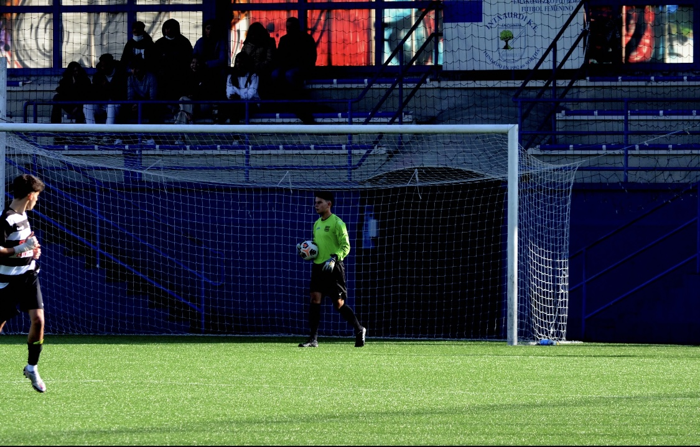

Esta es mi primera página web y gracias a ella os voy a mostrar un poco más acerca de mi vida profesional , así como por ejemplo, mis proyectos, mis estudios, mis trabajados, mi contacto, etc. A continuación os mostare un lista en la cual aparezeran los aspectos que voy a ir tratando.
Soy un joven de 20 años que vive en San Sebastian, especificamente en Intxaurrondo. Es cierto que mi barrio está algo alejado del centro de la ciudad de Donosti pero durante estos últimos años el ayuntamiento ha tratado de comunicarlo mediante el transporte público, como por ejemplo con la etsación del topo de Sagastieder.
Actualmente estoy muy metido en el mundo del fútbol ya que, ademas de practicarlo en un equipo también lo enseño en un club de fútbol.
Por una parte, llevo más de diez años jugando a fútbol en distintos equipos (todos de Donosti). Empecé en el Kostkas k.E. jugando de medio centro y con los años me cambie a portero. Continuo siendo porteto, pero mi andadura en el Kostkas acabado hace tres años. Me cambie de equipo, especificamente al Lengokoak debido a que el entrenador me llamo explicandome que le gustaría que jugara para el. Finalmente, hoy en día juego en el Irauli un equipo en el que la maypría de los jugadores son más mayores que yo ya que, en la categoria que estoy se pueden inscribir todos los mayores de 18 años.
Por otra parte, llevo tres años siendo entrenador de fútbol. Hoy en día dirigo dos equipos en el Club Sanse (un equipo del colegio de Jesuitas), uno de ellos femenino y otro masculino. Las chicas a las que n etreno tiene entre 13 y 14 años y los chicos si que son más pequeños entre 8 y 9 años. La verdad que estoy muy contento con mi trabajo como entrenador de fútbol.
Video de uno de los últimos partidos de mi equipo el Irauli
Foto jugando un partido con el Lengokoak
En este apartado voy ha hablar sobre mis dos trabajos temporales que he realizado. Estos dos trabjaos han sido expontaneos ya que, no podría combinar los un trabajo duradero con los entrenamientos tanto mios como los de la chavalas y los cahvales masla universidad. En este apartado podría haber metido mi trabajo como entrenador, pero como es algo que disfruto y no me importa lo veo más como una afición.
Estoy inscrito en Sureuskadi una compañia la cual llama a gente para realizar distintos trabajos, como por ejemplo; ayudar en el Zinemaldi, eventos como la Behobia, partidos en Anoeta, etc. Gracias a esto puedo ganar aldun dinero y a la vez estudiar y seguir entrenando.
Este verano he trabajado como Staff en la Donosti Cup un torneo internacional que se organiza en San Sebastian todos los veranos a principios de julio. la verad que es un torneo al que vienen muchos equipos de afuera y sinceramente es un trabajo más duro de lo que parece. Los primeros 3 días se dedican a acreditar a todos los jugadores mediante pulsetas de distintos colores dependiendo de la edad y la categoria en la que jugaran en el torneo (algo muy estresante). Los siguientes 5 días se juegan partidos en distintos campos y ahi es donde estamos todo el día los Staff-s, controlando cada partido (las tarjetas, goles, alineaciones, jugadores inscritos, peleas entre entrenadores). Los pero es cuando dos equipos acaban peleandose y nosotros somos los responsables de solucionar el problema. Por suerte es un trabajo que está bien pagado.
Resumen Ceremonia de Inauguración Donosti Cup 2022